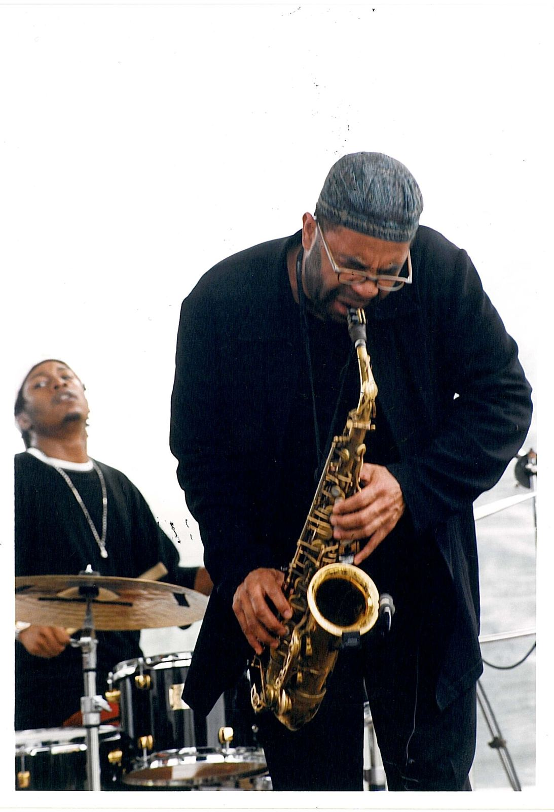

Festivals · Music
Festival Internacional de Jazz de Punta del Este 2027 (31st edition)
- Dates
- –
- Location
- Punta del Este, Uruguay
- Format
- In-person
- Category
- Music
- Industry
- Music
- Organiser
- Francisco Yobino (Festival Internacional de Jazz de Punta del Este)
- Official website
- https://medios.presidencia.gub.uy/legal/2026/resoluciones/05/presidencia_sp_1333.pdf
About
Held at Finca El Sosiego (Punta Ballena) in past editions; press says the same for 2027 (not used for the pin). Uruguay dates are local (Uruguay time, UTC-3 all year, no daylight saving).
Topics: jazz, open-air concerts.
No organiser attendance figure found on the official pages checked (24 Nov 2026). Ranked by an estimated size tier 'medium' (about 1,000-10,000 attendees; our judgement from format, venue and scale, not an official number).
Sources
- Official (Presidencia de la República resolution) — https://medios.presidencia.gub.uy/legal/2026/resoluciones/05/presidencia_sp_1333.pdf
- Official — https://festival.com.uy/wp/